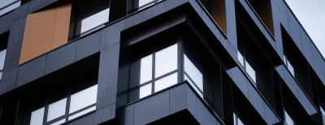
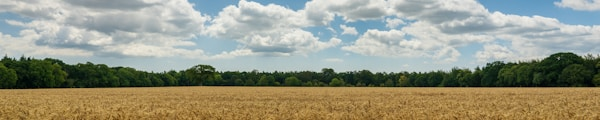
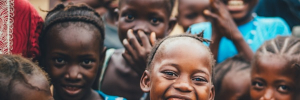

Главное
Сегодня · 12:35

Сегодня · 12:35
Сегодня · ◉ 19 750
Сегодня · ◉ 19 000

АгроСегодня · ◉ 18 250

ГородСегодня · ◉ 17 500
10:42 ◉ 16K
10:28 ◉ 15K
10:14 ◉ 14K
09:58 ◉ 13K
09:43 ◉ 12K
09:28 ◉ 11K
09:10 ◉ 10K
08:55 ◉ 9K